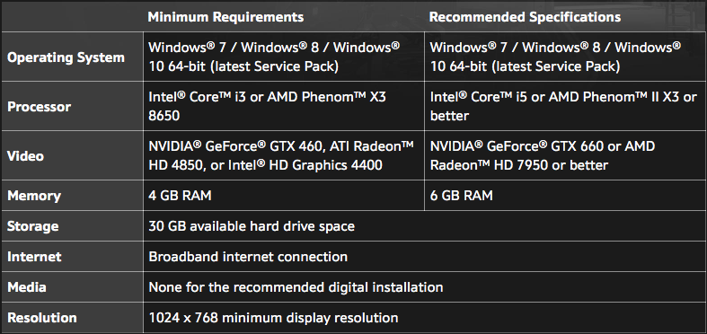
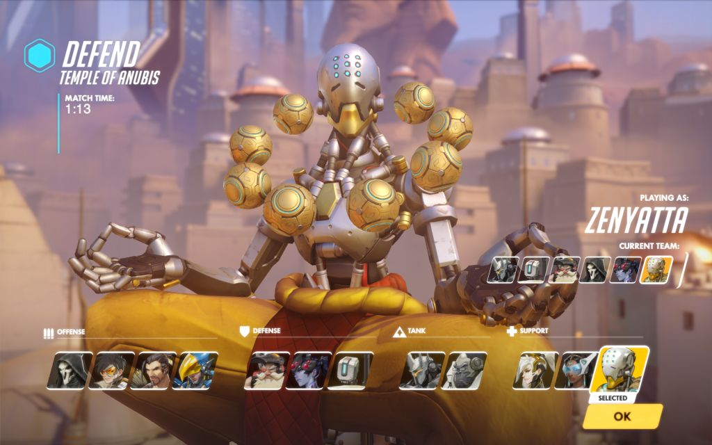
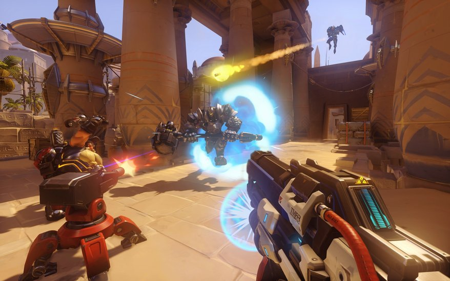
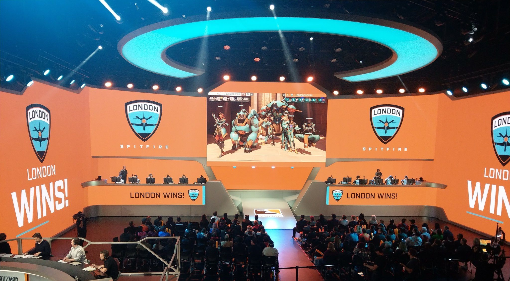

Overwatch is an atypical first-person shooter game, an amalgamation of an FPS and a team-based MOBA. While these two genres of games have produced hits like Team Fortress 2 and Call of Duty (both FPS), and Dota 2 and League of Legends (both MOBAs), they have seldom overlapped.
With Blizzard's release of Overwatch, this is no longer the case - the raw mechanical skill of class-based shooter games is combined with the strategy and coordination of MOBAs. In Overwatch, 2 teams of 6 players each battle it out to complete certain objectives on one of four main map types to win the game.
 Some characters may require more mechanical skill than others.
Some characters may require more mechanical skill than others.
Overwatch has been lauded for its innovative gameplay and with advent of Blizzard's Overwatch League, the game has brought e-sports to the mainstream media with an audience of over 150,000 whenever the stream is live on twitch.tv. But how does it fare as an experience for the casual gamer?
In this review, I will be looking at some of the features and functionalities of the game, my personal experience in Overwatch so far and my evaluation of the game.
First Impressions
The game feels incredibly polished, as you would expect from a product that costs about SGD$60. The concept of the game itself is simple: work together with your team to accomplish objectives and shoot anyone who gets in your way. However before you part ways with your money, it's important to check if your rig can handle Overwatch.
Looking at the system requirements for running Overwatch, one might be fooled into thinking that it would be enough to fulfill the minimum requirements. However, in reality the game looks awful when played on minimum settings, without the likes of vsync, shadows and textures.
I tried playing Overwatch on a PC without a dedicated graphics card and the difference in performance was fairly substantial, although the core CPU temperatures never went above 60 degrees in both PCs. Hence, I would strongly suggest running the game on a PC which has at least the recommended specfications for the full authentic Overwatch experience.
Gameplay
In game, there are a variety of game modes to pick from. These range from competitive ranked games, unranked games, games against AI-controlled bots and even a practice range for you to work on your aim.
 In the escort game mode, teams of 6 attempt to push a payload across the entire map whilst the enemy team attempts to halt their progress.
In the escort game mode, teams of 6 attempt to push a payload across the entire map whilst the enemy team attempts to halt their progress.
If none of these appeal to you, you can also create your own servers with your own rules under the game browser tab. Blizzard also holds seasonal events where one can play Overwatch's version of soccer, paintball, hide and seek or defend against a swarm of zombies.
 You can pick characters from four classes of heroes: offense, defense, tank & support."There are characters that I really enjoy playing or playing against that make me come back to OW, and then there are characters I wish never existed in the game that make me stop playing OW for a while."
Overwatch has a wide variety of characters to choose from, each markedly different from each other. Balance remains an issue, with certain heroes seemingly stronger than others.
Overall, I found the game an enjoyable experience as a casual gamer; there was sufficient variety in game modes and characters to keep the game interesting even after almost 10 hours of game play. On the competitive side, the ranked matchmaking is also solid, providing a balanced and intriguing experience for the more serious gamers.
Verdict
Overall, I found the game an enjoyable experience as a casual gamer; there was sufficient variety in game modes and characters to keep the game interesting even after almost 10 hours of game play. On the competitive side, the ranked matchmaking is also solid, providing a balanced and intriguing experience for the more serious gamers.
 Overwatch provides a fun gaming experience for all - be it messing around in private lobbies with friends or climbing the competitive ladder to try and reach the top 500.The SGD$60 is more than justified in my opinion; however if you have any remaining doubts, do try the game out over one of the numerous free weekends or purchase it when it's on sale (usually about ~$30). Either way, it is one of my top rated games over the past 2 years and if you have any interest in FPS and/or MOBAs, Overwatch is a must-buy and an instant-classic.
Looking forward
Looking ahead, I expect Overwatch to continue to grow, especially with the advent of the Overwatch League, the professional circuit for Overwatch gaming.
 12 teams with players from all over the world compete to prove themselves as the world's best in the Overwatch League.With the support of Blizzard, the Overwatch League might bring Overwatch in particular, and esports in general, into the realm of mainstream media and it could lead to massive changes in how gaming is perceived in our society today.